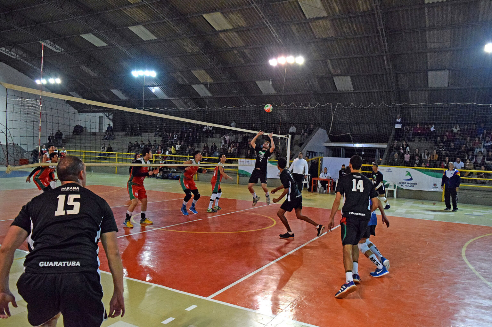
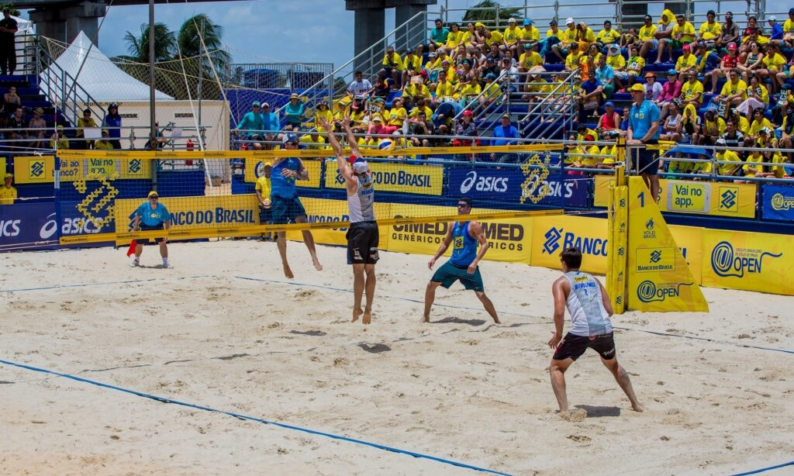
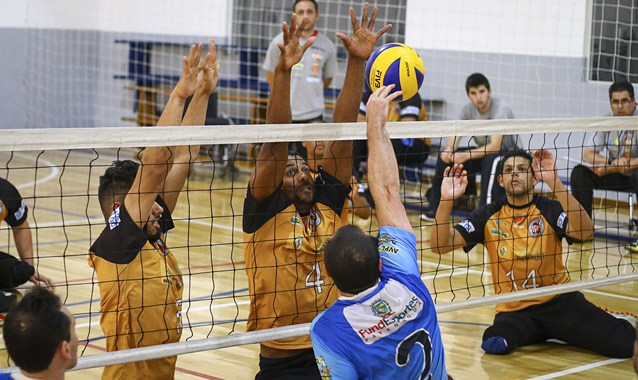

Voleibol, chamado frequentemente no Brasil de Vôlei, é um esporte praticado em uma quadra dividida por uma rede.
O esporte possui duas equipes com seis jogadores em cada lado. O objetivo é fazer a bola passar sobre a rede e tocar o chão da quadra adversária.
Ao mesmo tempo, cada equipe precisa evitar que os adversários consigam fazer a bola tocar em seu próprio lado da quadra.
O voleibol foi originalmente chamado de Mintonette e possui elementos de outros esportes, como badminton, tênis e handebol.
Atualmente, o vôlei é um esporte olímpico e é regulado pela Fédération Internationale de Volleyball (FIVB).
Jogado em recinto fechado ou aberto, com seis jogadores em cada equipe. Possui posições específicas, rodízio e ataques fortes.

Praticado na areia ao ar livre e disputado em duplas, com dois jogadores de cada lado. Exige bastante resistência física.

É uma versão paralímpica em que os atletas permanecem com parte do corpo em contato com o chão. A rede é mais baixa.
